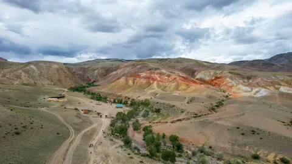
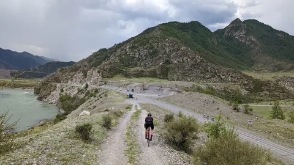
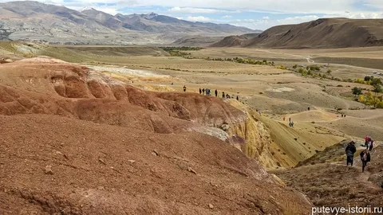

← Назад к маршрутам



📖 О маршруте
Маршрут проходит по Чуйскому тракту в районе посёлка Кош-Агач. Уникальные красно-терракотовые скальные образования, напоминающие ландшафты Марса — отсюда и название. Трасса включает крутые подъёмы, каменистые грунтовки и живописные участки по горной степи. Это одно из самых фотографируемых мест на Алтае.
⚠️ Важно! Маршрут проходит в удалённой местности. Обязательно возьмите с собой запас воды (минимум 2 литра), аптечку, ремкомплект и заряженный телефон с GPS-навигатором.
💡 Совет райдера: Лучшее время для поездки — июнь или сентябрь. В середине лета очень жарко, а в октябре уже холодно. Обязательно надевайте солнцезащитный крем и головной убор.
📍 Особенности маршрута
- Уникальный "марсианский" ландшафт
- Полная удалённость от цивилизации, настоящий backcountry
- Комбинированный маршрут: горная степь + каменистые участки
- Незабываемые фото на фоне красных скал
- Можно увидеть редких животных: архаров, манулов
🚗 Как добраться
Из Горно-Алтайска: На автомобиле до села Кош-Агач (около 570 км по Чуйскому тракту). Рекомендуется делать ночёвку в пути — дорога долгая и утомительная.
Старт маршрута: Поворот на "Алтайский Марс" находится между сёлами Кош-Агач и Чаган-Узун.
Координаты старта: 49.9667° N, 88.9667° E